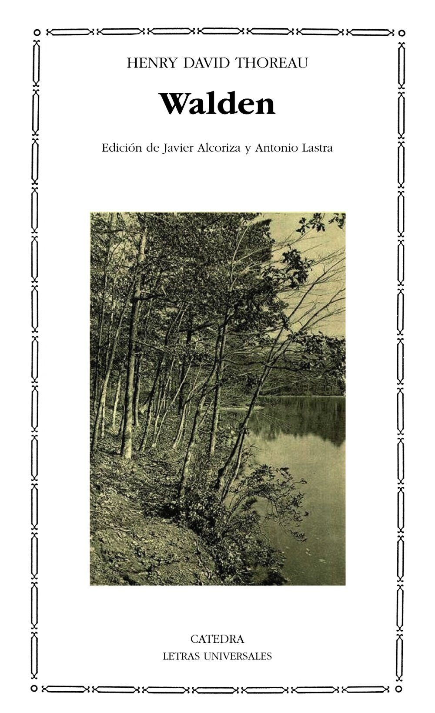

La conquista de la felicidad.
Bertrand Russell, matemático y filósofo británico reflexiona sobre las causas de la infelicidad en la humanidad
Amor y voluntad
Rollo May define la sociedad actual como «,esquizoide», porque se evitan en medida creciente las relaciones afectivas. En su lugar aparece la apatía, fenómeno peligroso porque guarda una relación dialéctica con la violencia
Psicocibernética
Maxwell Maltz fue uno de los autores más importantes y reconocidos en el campo de la psicología. Sus libros incluyen "Vida creativa para hoy, El poder mágico de la psicología de la autoimagen" y el éxito de ventas "Dr. Pygmalion". Cirujano plástico brillante, también fue profesor y conferencista de renombre internacional.
Walden
Walden (originalmente Walden, la vida en los bosques) es un ensayo, publicado en 1854, cuyo autor es Henry David Thoreau y constituye uno de los textos de no ficción más famosos escritos por un estadounidense. En él, el autor narra los dos años, dos meses y dos días que vivió en una cabaña construida por él mismo, cercana al lago Walden. Con este proyecto de vida solitaria, al aire libre, cultivando sus alimentos y escribiendo sus vivencias